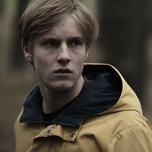
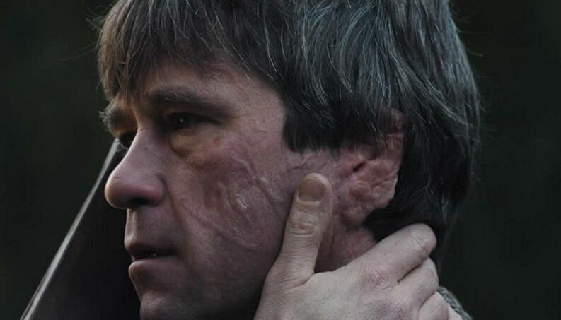
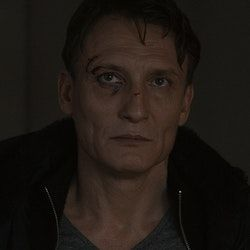
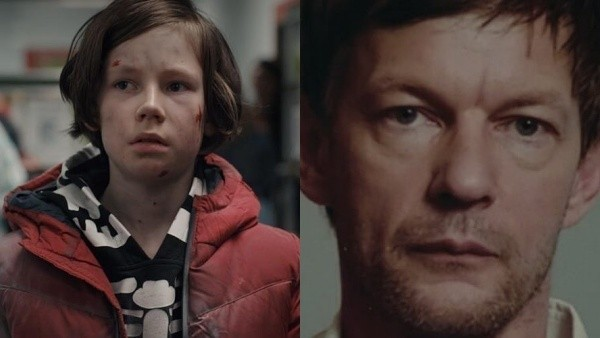
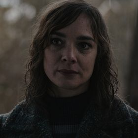
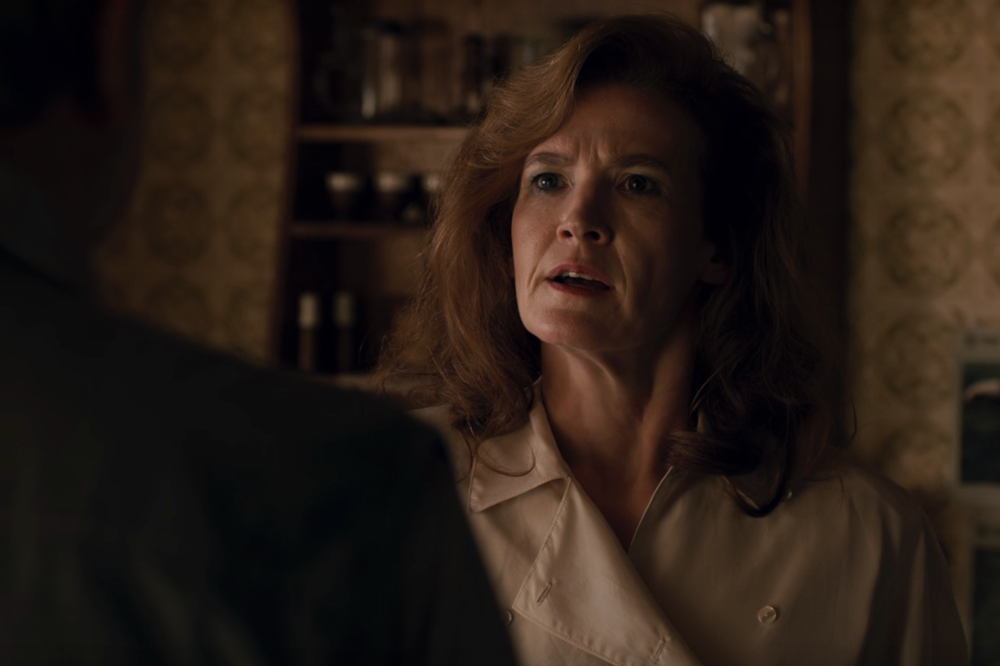
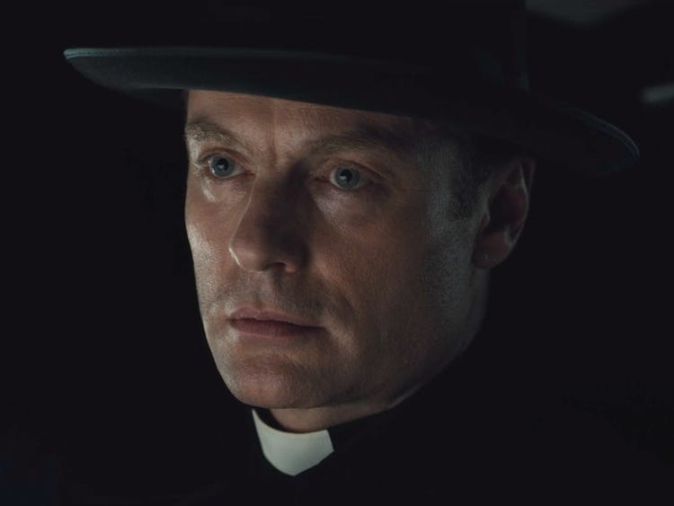
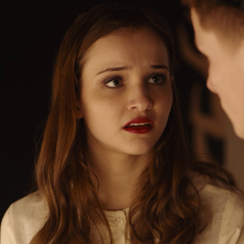
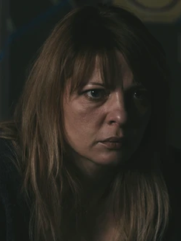

The World of DARK
Take a comprehensive look into the town of Winden, where family trees are shaped more like circles, and just about everything is a paradox. Confused? That's the fun part. Check out our DARK Character Guide for a basic overview of the main characters.
Watch DARK on Netflix Join the fan club!

Jonas Kahnwald
Son of Hannah and Michael Kahnwald. A somber teenager who struggles after the unexpected suicide of his father Michael. Jonas and Martha Nielsen have a complicated romantic history. Jonas has strong feelings for Martha, but when Jonas left for the psych ward during the summer, Martha and Jonas' best friend Bartosz Tiedemann began dating. However, it is revealed that the "missing" Mikkel Nielsen, Martha's younger brother, was actually transported back in time to 1986 and "became" Michael Kahnwald. Thus making Martha Jonas' aunt, Jonas becomes disturbed and confused with his relentless remaining feelings for Martha, and cuts Martha off without an explaination then disappears from 2019 Winden.

Helge Doppler
Father of Peter Doppler. In 1953, young Helge is chased by Ulrich Nielsen who had just traveled from 2019 and is posessed with his theory if he kills Helge then it will save Mads and Mikkel. After Ulrich badly beats Helge on the side of his head, Helge is left for dead in the bunker. Helge survives the attack but with major injuries, but is stuck in the bunker in 1953 when all of a sudden a rift in time opens and young Helge sees 2019 Jonas in the bunker in 1986. When their hands touch, Helge is transported into the future. As an adult Helge works as security for the Nuclear Powerplant. Helge is then recruited by Noah to commit crimes like kidnapping Mads Nielsen and Erik Obendorf for Noah's time travel chair experiment. As an old man, Helge lives in a care home with dimentia, constantly mumbling "tick-tak".

Ulrich Nielsen
Police investigator and married to Katharina Nielsen. Ulrich has 3 children, Magnus, Martha, and Mikkel. Ulrich also is having a complicated affair with Hannah Kahnwald. When Ulrich was a teenager, his younger brother Mads Nielsen vanished from Winden without a trace. When Ulrich's son Mikkel vanishes without a trace, similar to the way his brother Mads vanished 33 years ago, Ulrich becomes obsessed with the investigation. When a young boy's body is discovered in the forest, Ulrich is the only one to identify it as the body of his brother Mads. Ulrich follows the suspect, Helge Doppler, into the Winden caves and travels through the time passage to 1953, where he finds the young Helge Doppler, beats him with a stone and leaves him for dead, believing if he kills young Helge Doppler then he can save Mads and Mikkel's lives in the future. Ulrich is then arrested by young policeman Egon Tiedemann and jailed in 1953 before he could return to 2019.

Mikkel Nielsen / Michael Kahnwald
Son of Ulrich and Katharina Nielsen. In 2019, Mikkel disappears and reappears in 1986 where he gets trapped. Mikkel gets adopted by hospital nurse Ines Kahnwald and grows up with a new identity 'Michael Kahnwald'. At the Winden Hospital Mikkel meets a young Hannah who he will later marry. On June 21, 2019 Michael Kahnwald hangs himself in his attic studio, leaving behind only a letter that says "Do not open before November 4th at 10:13pm" which is the exact date and time Mikkel Nielsen disappears from 2019.

Hannah Kahnwald
As a teenager in 1986, Hannah met a strange boy outside the Winden hospital who claimed he was from the future. This man later became her husband, a man going by the name of Michael Kahnwald. Hannah and Michael have 1 son, Jonas. Shortly after her husband's suicide Hannah begins to have an affair with Ulrich Neilsen, whom she was in love with as a teenager. When Ulrich suddenly calls off their affair, Hannah is angry and desperate, and refuses to let Ulrich go that easily.

Caludia Tiedemann
Single mother and first female director of the Winden Nuclear Power Plant, Claudia has litle to no time for her one daughter Regina. in 1986, Claudia learns of a covered-up nuclear accident that happened the summer before and is shown a secret access point in the Winden caves where she finds countless yellow barrels of toxic waste. To close off access to the barrels, Claudia hires young and mysterious Aleksander Köhler who will eventially marry her daughter Regina.

Noah
The myserious priest. Noah's origin, adgenda, and identity are unknown. He is behind the kidnapping of Mads Nielsen, Erik Obendorf, and Yasin Friese with the help of Helge Doppler. Noah used them to test the time travel chair in the bunker in 1986, but the experiments backfired, killing all the children.

Martha Nielsen
Second of Katharina and Ulrich Nielsen's three children, with older brother Magnus and younger brother Mikkel who has gone missing. Martha is dating Bartosz Tiedemann, but finds herself actually in love with Jonas. When Jonas suddenly rejects her without giving her any explaination and goes "missing", Martha is hurt and confused.
